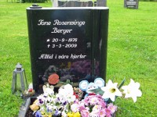

Ingeborg Beyer Jensdatter Busch
K, #27551, f. 19 januar 1853, d. 1936
Foreldre
Biografi
Ingeborg Beyer Jensdatter Busch ble født den 19 januar 1853 på/i Vikestad, Bindal, Nordland. Hun giftet seg med
Albert Hansen Busch den 15 november 1877 på/i Solstad kirke, Bindal, Nordland. Hun døde i 1936.
| Sist redigert |
10 februar 2021 00:00:00 |
| Slektskap | 6-menning 2 ganger forskjøvet til Håkon Wahl |
Albert Hansen Busch
M, #27552, f. 18 mars 1849, d. 12 mars 1916
Foreldre
Biografi
Albert Hansen Busch ble født den 18 mars 1849 på/i Hald, Bindal, Nordland. Han giftet seg med
Ingeborg Beyer Jensdatter Busch den 15 november 1877 på/i Solstad kirke, Bindal, Nordland. Han døde den 12 mars 1916 på/i Bindal, Nordland. Han ble gravlagt den 25 mars 1916 på/i Solstad kirkegård, Bindal, Nordland.
Albert Hansen Busch bodde på/i Vollan 16/4, Bindal, Nordland.
| Sist redigert |
10 februar 2021 00:00:00 |
| Slektskap | 3-menning 2 ganger forskjøvet til Håkon Wahl |
Frank Sveinung Rosenvinge
M, #27555, f. 26 desember 1956, d. 20 august 2011
Foreldre
Familie: Bjørg Anne Sandøy
| Datter | Siv Anita Rosenvinge+ |
| Datter | Tone Rosenvinge+ (f. 20 september 1976, d. 3 mars 2009) |
| Datter | Mona Rosenvinge+ |
Biografi
Frank Sveinung Rosenvinge ble født den 26 desember 1956 på/i Gravvik, Nærøy, Nord-Trøndelag. Han giftet seg med Bjørg Anne Sandøy den 15 mai 1976 på/i Stiklestad kirke, Verdal, Nord-Trøndelag. Han døde den 20 august 2011 på/i Nærøy bo- og behandlingssenter, Kolvereid, Nærøy, Nord-Trøndelag. Han ble gravlagt den 26 august 2011 på/i Lundring kirkegård, Nærøy, Nord-Trøndelag.
| Sist redigert |
22 august 2011 00:00:00 |
| Slektskap | 6-menning 1 gang forskjøvet til Håkon Wahl |
Vidar Torleif Langø
M, #27564, f. 19 oktober 1902, d. 9 juli 1961
Foreldre
Biografi
Vidar Torleif Langø ble født den 19 oktober 1902 på/i Vikna, Nord-Trøndelag. Han giftet seg med
Borghild Anie Hammarsøy. Han døde den 9 juli 1961 på/i Nærøy, Nord-Trøndelag. Han ble gravlagt den 15 juli 1961 på/i Lundring kirkegård, Nærøy, Nord-Trøndelag.
Vidar ble arrestert av Gestapo 24.9.1944 og satt på Vollan i Trondheim, deretter på Falstad og så Grini frem til frigjøringen.
| Sist redigert |
13 mai 2023 20:58:36 |
| Slektskap | 5-menning 2 ganger forskjøvet til Håkon Wahl |
Borghild Anie Hammarsøy
K, #27565, f. 11 februar 1911, d. 1 mai 1988
Foreldre
| Sønn | Helge Henrik B. Langø |
Biografi
Borghild Anie Hammarsøy ble født den 11 februar 1911 på/i Vikna, Nord-Trøndelag. Hun giftet seg med
Vidar Torleif Langø. Hun døde den 1 mai 1988 på/i Brønnøysund, Brønnøy, Nordland.
Borghild Anie Hammarsøy was also known as Borghild Anie Langø.
| Sist redigert |
13 mai 2023 20:59:50 |
Tone Rosenvinge
K, #27572, f. 20 september 1976, d. 3 mars 2009
Foreldre
Familie 1:
| Datter | Marita Rosenvinge Pedersen+ |
| Datter | Veronica Rosenvinge Pedersen |
Familie 2: Rune Berger
| Sønn | Runar Aleksander Berger |

Tone Rosenvinge Berger
Biografi
Tone Rosenvinge ble født den 20 september 1976 på/i Verdal, Nord-Trøndelag. Hun giftet seg med Rune Berger. Hun døde av kreft den 3 mars 2009 på/i Rørvik sykestue, Vikna, Nord-Trøndelag. Hun ble gravlagt den 10 mars 2009 på/i Lundring kirke, Nærøy, Nord-Trøndelag
+.
Tone Rosenvinge was also known as Tone Roenvinge Berger.
| Sist redigert |
20 august 2024 20:49:19 |
| Slektskap | 6-menning 1 gang forskjøvet til Håkon Wahl |
Kristian Brun Sandøy
M, #27574, f. 22 desember 1917, d. 17 mai 1995
Foreldre
Familie: Betsy Gunelie Kongensøy (f. 24 september 1923, d. 22 februar 2013)
| Datter | Gerd Annie Sandøy |
| Datter | Bjørg Sandøy |
Biografi
Kristian Brun Sandøy ble født den 22 desember 1917 på/i Sandøya, Nærøy, Nord-Trøndelag. Han giftet seg med
Betsy Gunelie Kongensøy i 1947. Han døde den 17 mai 1995 på/i Nærøy, Nord-Trøndelag. Han ble gravlagt den 26 mai 1995 på/i Lundring kirkegård, Nærøy, Nord-Trøndelag.
Kristian Brun Sandøy kjøpte den 25 oktober 1952 Øysand 21/3, Sandøya, Nærøy, Nord-Trøndelag.
| Sist redigert |
13 februar 2014 00:00:00 |
| Slektskap | 9-menning 3 ganger forskjøvet til Håkon Wahl |
Betsy Gunelie Kongensøy
K, #27575, f. 24 september 1923, d. 22 februar 2013
Foreldre
Familie: Kristian Brun Sandøy (f. 22 desember 1917, d. 17 mai 1995)
| Datter | Gerd Annie Sandøy |
| Datter | Bjørg Sandøy |
Biografi
Betsy Gunelie Kongensøy ble født den 24 september 1923 på/i Nærøy, Nord-Trøndelag. Hun giftet seg med
Kristian Brun Sandøy i 1947. Hun døde den 22 februar 2013. Hun ble gravlagt den 6 mars 2013 på/i Lundring kirkegård, Nærøy, Nord-Trøndelag.
Betsy Gunelie Kongensøy was also known as Betsy Gunelie Sandøy.
| Sist redigert |
13 februar 2014 00:00:00 |
| Slektskap | 6-menning 1 gang forskjøvet til Håkon Wahl |
{kind=link}